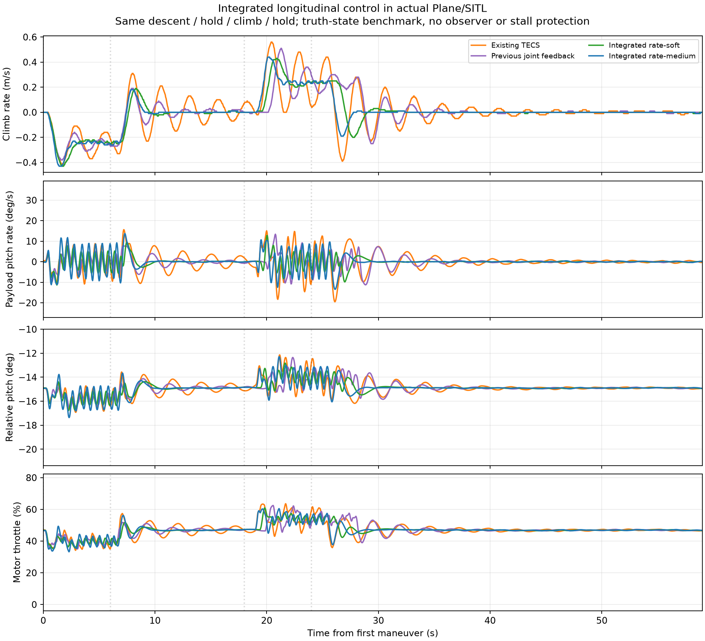
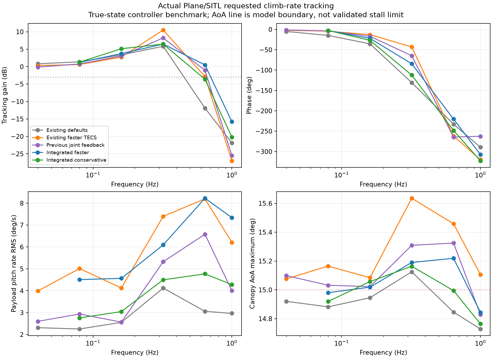
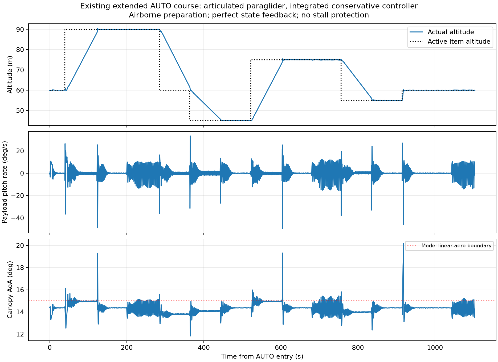
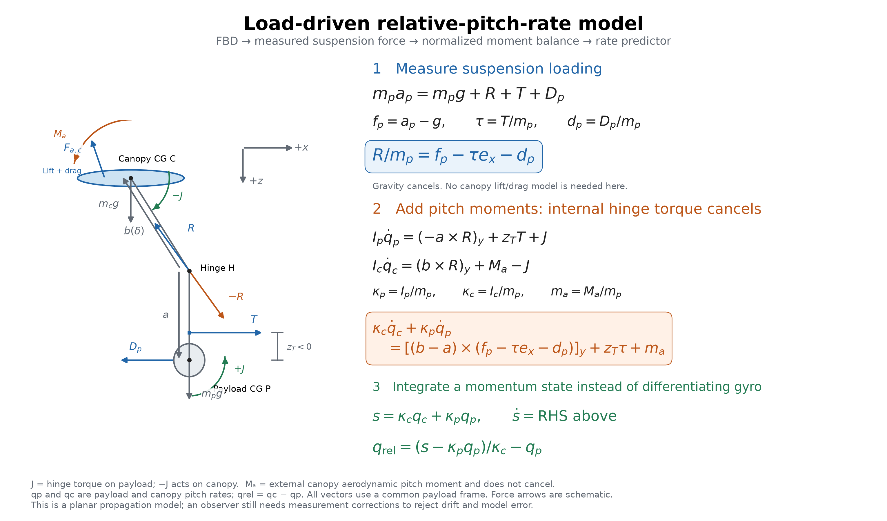

The longitudinal problem I want to solve is how to use as much control bandwidth as possible without stalling the canopy or driving the canopy and payload into large oscillations. After seeing self-excitation from my throttle pitch damper, I was not convinced that motion-profile limiting alone would get me the performance I wanted. I suspected the controller needed some awareness of the relative angles and rates.
Before taking on an observer, I asked us to try controllers that could read the simulated joint state directly. That gave us a way to ask whether the information was useful at all, and what remained difficult even with perfect access to it. These local truth-state prototypes are research; they are not included in the durable ArduPilot branch.
First, test whether joint-state feedback helps
We first kept TECS and added canopy/payload rate feedback ahead of motor lag, working through 44 trials. A useful correction was approximately Δthrottle = -0.56 q_canopy + 0.16 q_payload, with rates in rad/s. In a matched faster-TECS case, payload pitch-rate RMS fell from 4.69 to 2.95 deg/s. Relative-rate information supplied most of the benefit; matched payload-only feedback achieved 5.02 deg/s. This reduced oscillation but did not demonstrate a large usable bandwidth increase.
I then asked us to try a controller update that treated the longitudinal system more directly. We tested integrated longitudinal control in a subsequent 21-trial study. Strong direct-throttle LQI gains became unstable with actuator timing/slew. The final conservative prototype commands throttle rate at 50 Hz, including motor lag, command state, saturation and conditional integral antiwindup. Its states include payload pitch, relative angle/rate, payload rate, air-relative velocity, motor throttle, previous command and climb-error integral.
| Matched step case | Climb tracking RMS | Payload rate RMS | Settling time |
|---|---|---|---|
| Faster TECS baseline | 0.12851 m/s | 4.6922 deg/s | 12.04 s |
| Prior joint feedback | 0.09708 m/s | 2.9541 deg/s | 5.46 s |
| Conservative integrated | 0.07978 m/s | 2.3915 deg/s | 2.70 s |
| Faster integrated | 0.07123 m/s | 3.5172 deg/s | 2.20 s |

The conservative setting was encouraging: it also improved rate RMS in zero-joint-damping, slower-motor and shifted-thrust-line checks. The severe gust cases showed how much work remained: about 38 deg/s rate RMS and angles of attack outside the calibrated model. At 0.32 Hz the whole-loop gain peak fell from 3.35 to 2.11, with more phase lag; the height outer loop still amplified the inner response. This is not proof of a safe high-bandwidth controller.

A local native AUTO course completed in 1103.6 s with maximum corner overshoot 1.079 m. It used an airborne preparation fixture, not a normal launch, and reached 20.16 degrees modeled angle of attack. Course assertions passing therefore do not establish stall protection.

Integrated summary, validation, oracle study and archived scripts provide provenance. Production sources/binaries were restored after these local trials. A payload-pitch transfer had a right-half-plane zero, while the CG climb transfer did not; inverse pitch response alone does not prove a fundamental climb-bandwidth limit.
Can I estimate what I cannot measure?
The next question was how to get relative pitch information without a hinge-angle sensor. I asked us to assess observability with and without airspeed, rather than assuming an observer would work.
The nominal nine-state linearization we assessed uses payload pitch, relative pitch, payload/relative rates, two air-relative velocity components, motor state and horizontal/vertical wind. With a known model and constant wind, the local PBH assessment gives rank nine with attitude/gyro/GNSS measurements, with or without a pitot sensor. This nominal result is weaker than it sounds: modeling unknown constant force/moment biases adds ambiguous modes.
With four independent constant acceleration/angular disturbances, the thirteen-state assessment gives zero-frequency PBH rank ten without airspeed and eleven with scalar airspeed: respectively three and two unobservable constant directions. This deliberately permissive bias model exposes ambiguity rather than asserting those biases are a physical plant. Relative rate appears more useful than absolute relative angle; a scalar pitot does not measure airflow direction or vertical wind.
I also questioned whether we needed raw IMU data when ArduPilot already has an AHRS interface. Checking those interfaces clarified what is available and where the lever-arm correction still belongs. AHRS gyro is corrected payload angular rate. AHRS earth-frame acceleration is bias-corrected specific force at the IMU, not automatically translated to the payload CG. The corrected delta-velocity interface includes gravity but likewise does not supply that moving-origin correction. EKF navigation position/velocity handle configured rigid-body IMU lever arms; canopy articulation still requires its own geometry. A practical observer should predict specific force at the actual sensor position and use AHRS correction rather than duplicating calibration or differentiating noisy gyro. AHRS/IMU-derived measurements also have correlated errors.
Assessment script and ranks/results are archived. No flight-ready observer or reliable absolute-angle limiter has been implemented.
How much model identification can we avoid?
Finally, I wanted to revisit the free-body diagram. If this eventually needs to work on a variety of platforms, every inertia, mass and aerodynamic coefficient we ask a user to identify is a practical obstacle. We looked for terms that cancel and ratios that can replace absolute values.

Let R be suspension force on the payload, T forward thrust, Dp payload aerodynamic force, and fp = ap - g payload-CG specific force. Define τ = T/mp, dp = Dp/mp, κp = Ip/mp, κc = Ic/mp, and ma = Ma/mp. Vectors a and b(δ) run from the hinge to payload and canopy CG in one frame; zT is the signed thrust moment arm using the diagram convention.
The payload force balance yields:
R/mp = fp - τ ex - dp
Adding payload and canopy pitch equations cancels their equal-and-opposite internal hinge torque:
κc q̇c + κp q̇p = [(b-a) × (fp-τ ex-dp)]y + zT τ + ma
s = κc qc + κp qp
ṡ = [(b-a) × (fp-τ ex-dp)]y + zT τ + ma
qrel = (s-κp qp)/κc - qp
This removes the explicit joint stiffness/damping law from the summed momentum propagation and replaces canopy lift/drag force modeling with measured suspension loading. Uniform gravity cancels when translation is eliminated. Absolute mass can be reduced to inertia/mass ratios; κc = (mc/mp) kc² if kc is canopy radius of gyration. Scaling lengths by a reference suspension length and time by sqrt(L/g) improves numerical conditioning.
The external canopy pitching moment Ma does not cancel. Geometry, inertia ratios, thrust-per-mass/moment arm, payload drag and residual canopy moment still require modeling. Integrating the summed momentum without measurement correction drifts; this cancellation is not a complete observer and does not solve initial-state identifiability. My next step would be to benchmark an uncertainty-aware relative-rate observer against simulation truth, then test control with confidence-dependent limits and recorded flight data. The experiments give me a reason to pursue relative-rate feedback, but they have not yet answered how reliably I can estimate absolute canopy angle or protect the wing at the bandwidth I want.